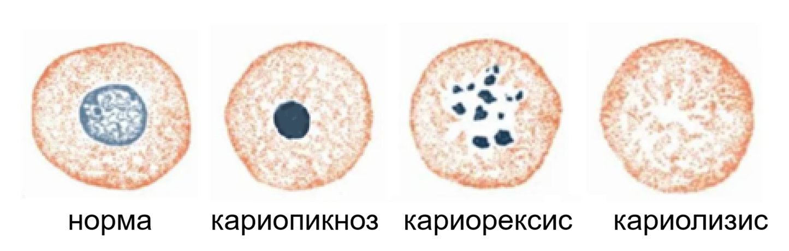
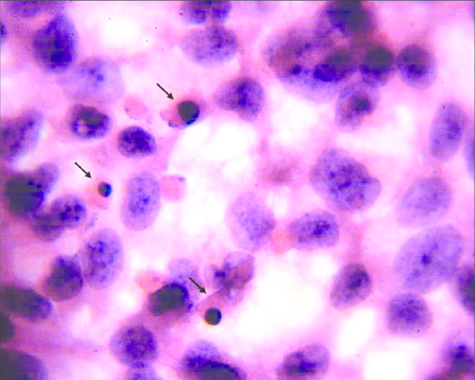
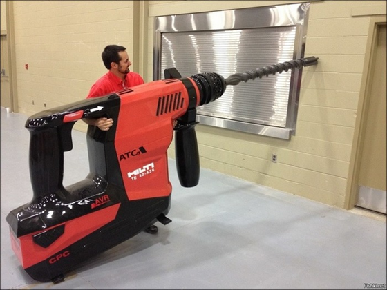
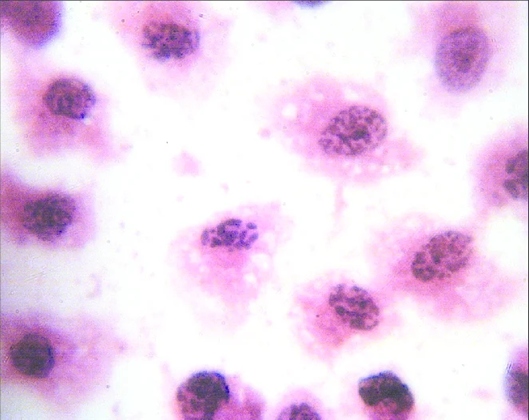
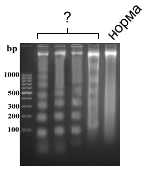

Нажмите на карточку, чтобы узнать ответ. Если вопрос вызвал затруднение, нажмите на кнопку "В список вопросов". Этот вопрос будет помещен в список в конце страницы. Можно заскринить этот список




